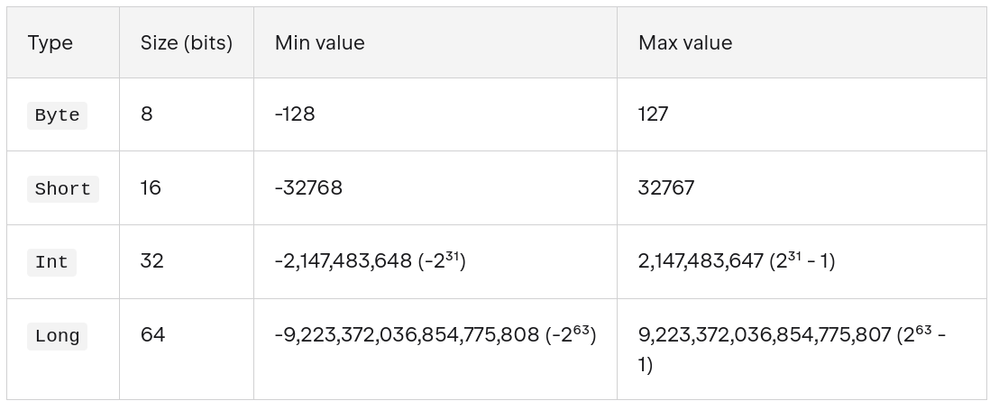
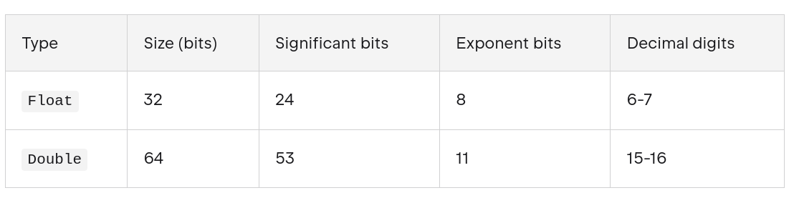

The Kotlin language
Kotlin is a cross-platform, statically typed, general-purpose high-level programming language with type inference. Kotlin is designed to interoperate fully with Java, and the JVM version of Kotlin's standard library depends on the Java Class Library.
Kotlin mainly targets the JVM, but also compiles to JavaScript or native code.Language development costs are borne by JetBrains, while the Kotlin Foundation protects the Kotlin trademark.
The Android Kotlin compiler emits Java 8 bytecode by default (which runs in any later JVM), but allows targeting Java 9 up to 20, for optimizing.
On 7 May 2019, Google announced that the Kotlin programming language had become its preferred language for Android app developers. Since the release of Android Studio 3.0 in October 2017, Kotlin has been included as an alternative to the standard Java compiler.
References:
Hello world
Open the Kotlin Playground and write and execute this code:
1 2 3 | |
fun main() is the entry point of the program. All Kotlin programs are required to have a main function, which is the specific place in your code where the program starts running.
println is a function that takes an argument as a String and outputs its content to the console.
Tip
You can also run Kotlin code in Android Studio creating a new file on an exisiting project and running that file.
Variables
To create a variable, use var or val, and assign a value to it with the equal sign (=):
1 2 | |
The difference between var and val is that variables declared with the var keyword can be modified, while val variables cannot. val variables are immutable.
Kotlin uses type inference, but you can specify the type when create a variable:
1 2 | |
The general rule for naming Kotlin variables are:
- Names can contain letters, digits, underscores, and dollar signs.
- Names should start with a letter,
$and_ - Names are case sensitive ("myVar" and "myvar" are different variables)
- Names should start with a lowercase letter and it cannot contain whitespace
- Reserved words (like Kotlin keywords, such as var or String) cannot be used as names
Types
In Kotlin, everything is an object in the sense that you can call member functions and properties on any variable.
For integer numbers, there are four types with different sizes and value ranges:

When you initialize a variable with no explicit type specification, the compiler automatically infers the type with the smallest range enough to represent the value starting from Int. If it doesn't exceed the range of Int, the type is Int. If it does exceed that range, the type is Long. To specify the Long value explicitly, append the suffix L to the value. To use the Byte or Short type, specify it explicitly in the declaration.
1 2 3 4 | |
Info
In addition to signed integer types, Kotlin also provides unsigned integer types
For real numbers, Kotlin provides floating-point types Float and Double that adhere to the IEEE 754 standard. Float reflects the IEEE 754 single precision, while Double reflects double precision.

For variables initialized with fractional numbers, the compiler infers the Double type.
The String data type is used to store a sequence of characters (text). String values must be surrounded by double quotes:
1 | |
String literals may contain template expressions (pieces of code that are evaluated and whose results are concatenated into a string). When a template expression is processed, Kotlin automatically calls the .toString() function on the expression's result to convert it into a string. A template expression starts with a dollar sign ($) and consists of a variable name:
1 2 3 4 | |
Template expressions can also hold an expression in curly braces:
1 2 3 | |
The Boolean data type can only take the values true or false:
1 2 | |
The Char data type is used to store a single character. A char value must be surrounded by single quotes:
1 | |
Type Conversion
In Kotlin, numeric type conversion is different from Java. For example, it is not possible to convert an Int type to a Long type with the following code:
1 2 3 | |
To convert a numeric data type to another type, you must use one of the following functions: toByte(), toShort(), toInt(), toLong(), toFloat(), toDouble(), toString() or toChar():
1 2 3 | |
Nullable types and Elvis operator
Kotlin is a safe language, and among other things, it prevents us from programming errors such as NullPointerException since it does not allow variable values to be null by default.
If we want to specify that a variable can contain a null value, it is necessary to explicitly define
it as nullable. To do this, when we define it, we add a question mark ? to its type:
1 2 3 | |
In addition, Kotlin also provides us with the ?: operator, known as the Elvis operator, to
specify an alternative value when the variable is null.
1 2 3 4 5 | |
In this example we've used the ?. safe call operator. It prevents to cause an exception when the variable is null and Kotlin can't call the member function (length in this case).
Constants
We can declare constants in Kotlin using the const keyword. Constants must be initialized with a value at the time of declaration, and their value cannot be changed later. Constants can only be of primitive types and String.
1 2 | |
Tip
Use snake_case for naming constants: all uppercase letters with words separated by underscores.
The difference between val and const val is that val can be assigned a value at runtime, while const val must be assigned a value at compile time. Additionally, const val can only be used for top-level or object-level properties, while val can be used in any scope.
Operators
Arithmetic Operators
| Operator | Name | Description | Example |
|---|---|---|---|
| + | Addition | Adds together two values | x + y |
| - | Subtraction | Subtracts one value from another | x - y |
| * | Multiplication | Multiplies two values | x * y |
| / | Division | Divides one value from another | x / y |
| % | Modulus | Returns the division remainder | x % y |
| ++ | Increment | Increases the value by 1 | ++x |
| -- | Decrement | Decreases the value by 1 | --x |
Assignment Operators
| Operator | Example | Same As |
|---|---|---|
| = | x = 5 | x = 5 |
| += | x += 3 | x = x + 3 |
| -= | x -= 3 | x = x - 3 |
| *= | x *= 3 | x = x * 3 |
| /= | x /= 3 | x = x / 3 |
| %= | x %= 3 | x = x % 3 |
Comparison Operators
Comparison operators are used to compare two values, and returns a Boolean value: either true or false.
| Operator | Name | Example |
|---|---|---|
| == | Equal to | x == y |
| != | Not equal | x != y |
| > | Greater than | x > y |
| < | Less than | x < y |
| >= | Greater than or equal to | x >= y |
| <= | Less than or equal to | x <= y |
The === operator (and its negated counterpart !==) checks for referencial equality. a === b evaluates to true if and only if a and b point to the same object:
1 2 3 4 5 6 7 8 9 10 11 12 13 | |
For values represented by primitive types at runtime (for example, Int), the === equality check is equivalent to the == check.
Logical Operators
| Operator | Name | Description | Example |
|---|---|---|---|
| && | Logical and | Returns true if both statements are true | x < 5 && x < 10 |
| || | Logical or | Returns true if one of the statements is true | x < 5 || x < 4 |
| ! | Logical not | Reverse the result, returns false if the result is true | !(x < 5) |
Comments
Kotlin has single-line comments and multi-line comments:
1 2 3 4 5 | |
Control structures
if - else
The structure is similar to other languages:
1 2 3 4 5 6 7 | |
In Kotlin, if-else can return a value for each case that can be assigned to a variable:
1 2 3 4 5 | |
Warning
When using if as an expression, you must also include else (required).
That can be shortened to:
1 | |
This is equivalent to the ternary operator of other languages.
when
The when statement is similar to switch-case of C/Java:
1 2 3 4 5 6 | |
In the same way that if, when can return the result and can be assigned to a variable:
1 2 3 4 5 6 7 8 | |
while and do-while
while and do-while loops are similar to C/Java:
1 2 3 | |
1 2 3 4 | |
In the same way, we have break and continue statements.
for
Unlike Java and other programming languages, there is no traditional for loop in Kotlin.
In Kotlin, the for loop is used to loop through arrays, ranges, and other things that contains a countable number of values.
To loop through array elements, use the for loop together with the in operator:
1 2 3 4 | |
With the for loop, we can also iterate ranges:
1 2 3 | |
Functions
Definition and invocation
To declare a function in Kotlin we do:
1 2 3 4 5 | |
Some examples:
1 2 3 4 5 6 7 8 9 10 11 12 13 14 15 16 | |
We look at some features of function declarations:
- They are declared using the keyword fun
- Names start with lower case and are expressed in camelCase
- Function parameters are specified after the name, in parentheses, and in the form parameter : Type. These types must necessarily be specified
- The return type of the function may be specified after the parenthesis with the argument list, followed by
:. - When the function does not return any significant value, its default return type is
Unit, which would be the equivalent ofvoidin Java or C.
Warning
Unlike in some languages, such as Java, where a function can change the value passed into a parameter, parameters in Kotlin are immutable. You cannot reassign the value of a parameter from within the function body.
Named parameters
You can use named parameters when call a function:
1 2 3 4 5 6 | |
In this case, you can write the arguments in any order.
Default arguments
Function parameters can also specify default arguments.
1 2 3 4 5 6 7 | |
Single-expression functions
When the function body consists of a single expression, the curly braces can be omitted and the body specified after an = symbol:
1 | |
Explicitly declaring the return type is optional when this can be inferred by the compiler:
1 | |
Lambda expressions
Lambda expressions provide a concise syntax to define a function without the fun keyword. You can store a lambda expression directly in a variable without a function reference on another function.
Before the assignment operator (=), you add the val or var keyword followed by the name of the variable, which is what you use when you call the function. After the assignment operator (=) is the lambda expression, which consists of a pair of curly braces that form the function body:
1 2 3 4 5 6 7 | |
You can assign the lambda function to a variable and use it as a function too:
1 2 3 4 5 6 7 8 | |
The full syntactic form of lambda expressions is as follows:
1 | |
-
A lambda expression is always surrounded by curly braces.
-
Parameter declarations in the full syntactic form go inside curly braces and have optional type annotations.
-
The body goes after the
->. -
If the inferred return type of the lambda is not Unit, the last (or possibly single) expression inside the lambda body is treated as the return value.
If you leave all the optional annotations out, what's left looks like this:
1 | |
Another example of a lambda expression without arguments and return type:
1 | |
Trailing lambdas
If the last parameter of a function is a function, then a lambda expression passed as the corresponding argument can be placed outside the parentheses:
1 | |
Such syntax is also known as trailing lambda.
If the lambda is the only argument in that call, the parentheses can be omitted entirely:
1 | |
it for single parameter functions
If the lambda has a single argument, we can use the keyword it, which represents that argument passed to the lambda function.
The expression:
1 | |
can be shortened to:
1 | |